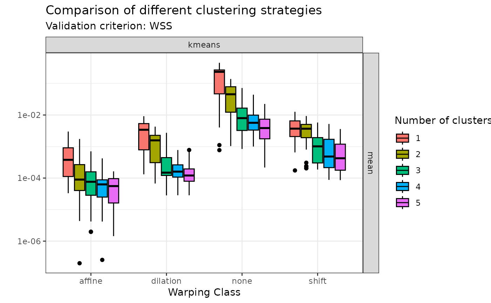
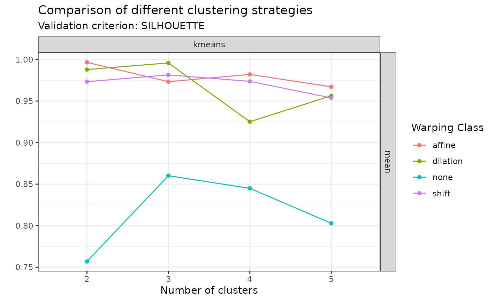
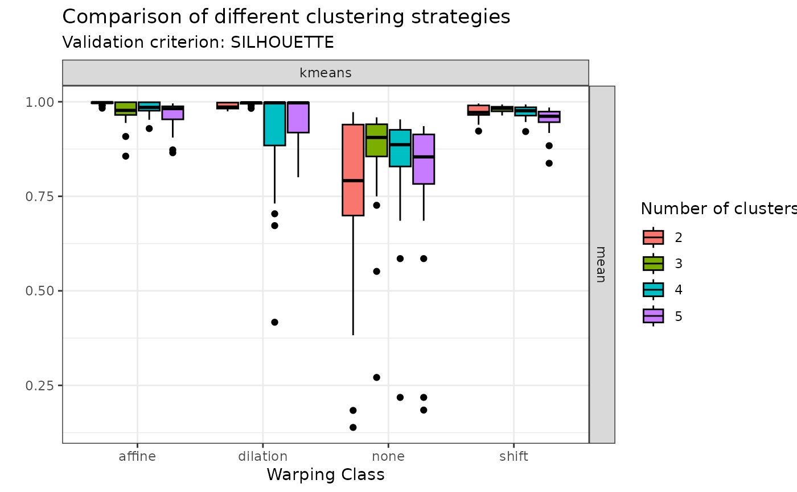
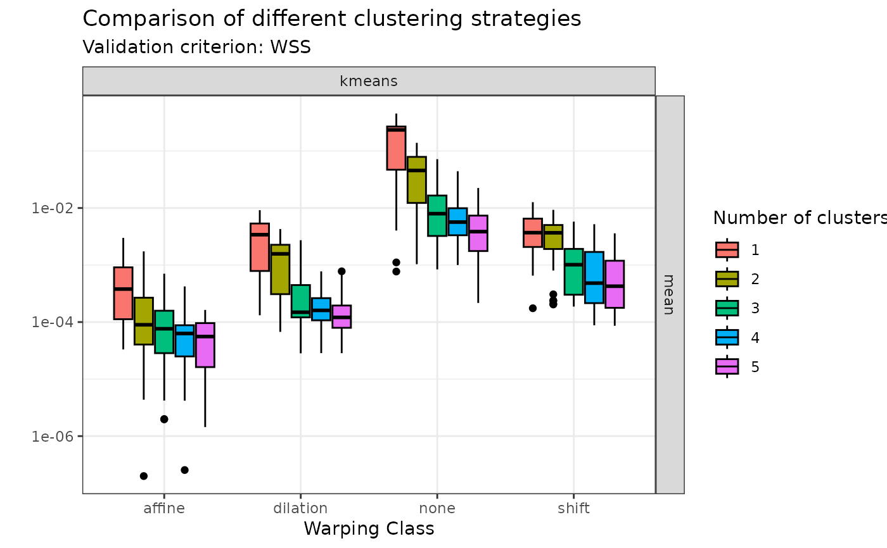
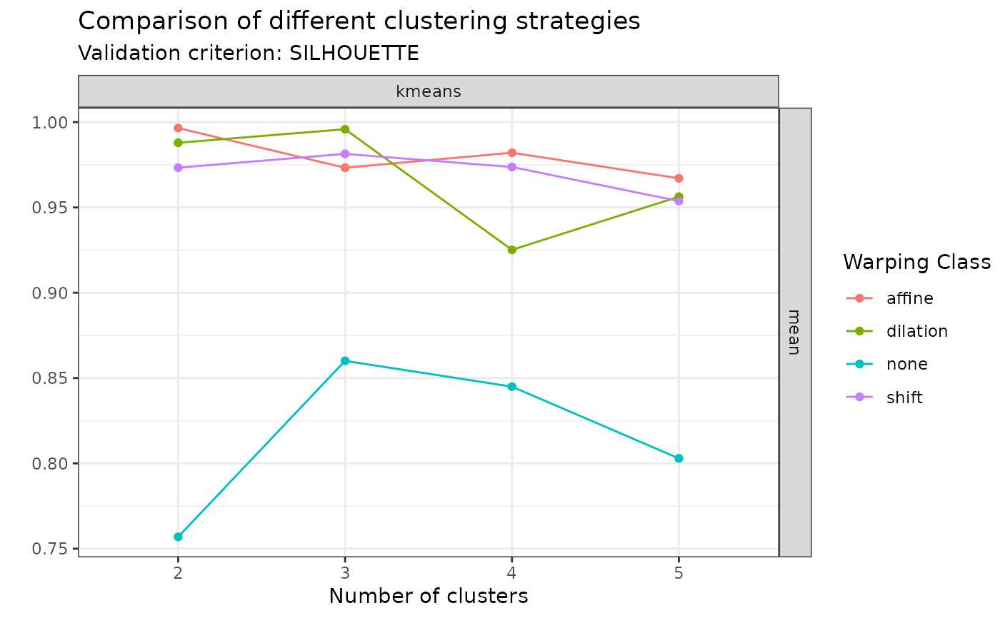
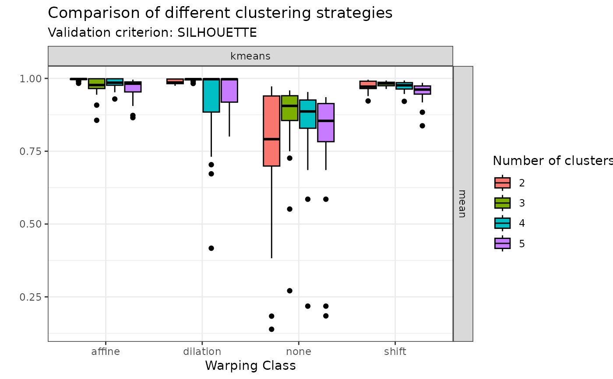

This function searches for clusters in the input data set using different
strategies and generates an object of class mcaps which stores multiple
objects of class caps. This is a helper function to facilitate comparison
of clustering methods and choice of an optimal one.
Usage
compare_caps(
x,
y,
n_clusters = 1:5,
is_domain_interval = FALSE,
transformation = c("identity", "srvf"),
metric = c("l2", "normalized_l2", "pearson"),
clustering_method = c("kmeans", "hclust-complete", "hclust-average", "hclust-single",
"dbscan"),
warping_class = c("none", "shift", "dilation", "affine", "bpd"),
centroid_type = c("mean", "medoid", "median", "lowess", "poly"),
cluster_on_phase = FALSE
)Arguments
- x
A numeric vector of length \(M\) or a numeric matrix of shape \(N \times M\) or an object of class
funData::funData. If a numeric vector or matrix, it specifies the grid(s) of size \(M\) on which each of the \(N\) curves have been observed. If an object of classfunData::funData, it contains the whole functional data set and theyargument is not used.- y
Either a numeric matrix of shape \(N \times M\) or a numeric array of shape \(N \times L \times M\) or an object of class
fda::fd. If a numeric matrix or array, it specifies the \(N\)-sample of \(L\)-dimensional curves observed on grids of size \(M\). If an object of classfda::fd, it contains all the necessary information about the functional data set to be able to evaluate it on user-defined grids.- n_clusters
An integer vector specifying a set of clustering partitions to create. Defaults to
1:5.- is_domain_interval
A boolean specifying whether the sample of curves is defined on a fixed interval. Defaults to
FALSE.- transformation
A string specifying the transformation to apply to the original sample of curves. Choices are no transformation (
transformation = "identity") or square-root velocity functiontransformation = "srvf". Defaults to"identity".- metric
A string specifying the metric used to compare curves. Choices are
"l2","normalized_l2"or"pearson". Iftransformation == "srvf", the metric must be"l2"because the SRVF transform maps absolutely continuous functions to square-integrable functions. Iftransformation == "identity"andwarping_classis eitherdilationoraffine, the metric cab be either"normalized_l2"or"pearson". The L2 distance is indeed not dilation-invariant or affine-invariant. The metric can also be"l2"ifwarping_class == "shift". Defaults to"l2".- clustering_method
A character vector specifying one or more clustering methods to be fit. Choices are
"kmeans","hclust-complete","hclust-average","hclust-single"or"dbscan". Defaults to all of them.- warping_class
A character vector specifying one or more classes of warping functions to use for curve alignment. Choices are
"affine","dilation","none","shift"or"bpd". Defaults to all of them.- centroid_type
A character vector specifying one or more ways to compute centroids. Choices are
"mean","medoid","median","lowess"or"poly". Defaults to all of them.- cluster_on_phase
A boolean specifying whether clustering should be based on phase variation or amplitude variation. Defaults to
FALSEwhich implies amplitude variation.
Value
An object of class mcaps which is a tibble::tibble storing the
objects of class caps in correspondence of each combination of possible
choices from the input arguments.
Examples
#----------------------------------
# Compare k-means results with k = 1, 2, 3, 4, 5 using mean centroid and
# various warping classes.
if (FALSE) { # \dontrun{
sim30_mcaps <- compare_caps(
x = simulated30_sub$x,
y = simulated30_sub$y,
warping_class = c("none", "shift", "dilation", "affine"),
clustering_method = "kmeans",
centroid_type = "mean"
)
} # }
#----------------------------------
# Then visualize the results
# Either with ggplot2 via ggplot2::autoplot(sim30_mcaps)
# or using graphics::plot()
# You can visualize the WSS values:
plot(sim30_mcaps, validation_criterion = "wss", what = "mean")
 plot(sim30_mcaps, validation_criterion = "wss", what = "distribution")

# Or the average silhouette values:
plot(sim30_mcaps, validation_criterion = "silhouette", what = "mean")

plot(sim30_mcaps, validation_criterion = "silhouette", what = "distribution")

plot(sim30_mcaps, validation_criterion = "wss", what = "distribution")

# Or the average silhouette values:
plot(sim30_mcaps, validation_criterion = "silhouette", what = "mean")

plot(sim30_mcaps, validation_criterion = "silhouette", what = "distribution")
